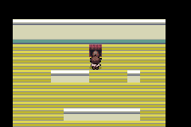
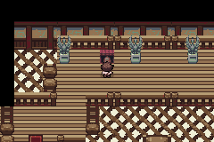
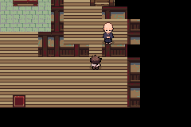
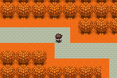

mGBA images are untouched240×160. HGSS references are linked full-map mosaics at their original resolution, not equivalent DS gameplay viewports. Different camera/projection/crop means these comparisons do not assert pixel identity or owner acceptance. Internet is needed for the reference images.
Same old battery save: QA04 → QA05 Bell9F

QA04: actual normal Continue; old generic room.

QA05: actual normal Continue; same map ID and position(7,3).
Barrier Station
HGSS reference, original dimensions. Bulbagarden Archives; Pokemon/Game Freak/Nintendo.

QA05 actual GBA viewport240×160; full source-relative geometry and deviations are documented separately.
Bellchime Trail
HGSS reference, original dimensions. Bulbagarden Archives; Pokemon/Game Freak/Nintendo.

QA05 actual GBA viewport240×160; full source-relative geometry and deviations are documented separately.
Bell Tower1F
HGSS reference, original dimensions. Bulbagarden Archives; Pokemon/Game Freak/Nintendo.QA05 actual GBA viewport240×160; full source-relative geometry and deviations are documented separately.
Bell Tower3F
HGSS reference, original dimensions. Bulbagarden Archives; Pokemon/Game Freak/Nintendo.QA05 actual GBA viewport240×160; full source-relative geometry and deviations are documented separately.
Bell Tower7F
HGSS reference, original dimensions. Bulbagarden Archives; Pokemon/Game Freak/Nintendo.QA05 actual GBA viewport240×160; full source-relative geometry and deviations are documented separately.
Burned Tower
HGSS reference, original dimensions. Bulbagarden Archives; Pokemon/Game Freak/Nintendo.QA05 actual GBA viewport240×160; full source-relative geometry and deviations are documented separately.
Tower summit
HGSS reference, original dimensions. Bulbagarden Archives; Pokemon/Game Freak/Nintendo.QA05 actual GBA viewport240×160; full source-relative geometry and deviations are documented separately.
Gym bridge
HGSS reference, original dimensions. Bulbagarden Archives; Pokemon/Game Freak/Nintendo.QA05 actual GBA viewport240×160; full source-relative geometry and deviations are documented separately.